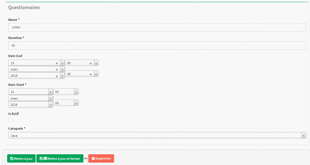
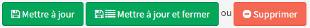

Pour pouvoir modifier un MCQ vous devez au préalable vous être connecter au Back office.
Si cela n'est pas fait redirigez vous sur : Connexion au Back Office
Une fois connecté dirigez-vous dans la section Gestion des MCQ, puis cliquer sur le bouton  de la section Questionnaires. Puis sélectionner dans la liste le questionnaire à modifier et cliquer sur son bouton .Vous serez alors rediriger sur l'écran ci-dessous.
de la section Questionnaires. Puis sélectionner dans la liste le questionnaire à modifier et cliquer sur son bouton .Vous serez alors rediriger sur l'écran ci-dessous.

Vous pouvez à partir de l'écran modifier plusieurs champs lié à ce MCQ :
Les champs finissant par des * signifient qu'ils sont obligatoires.

Une fois ces informations saisies vous pouvez confirmer en cliquant sur :
Créé avec HelpNDoc Personal Edition: Créer des fichiers d'aide Qt Help multi-plateformes